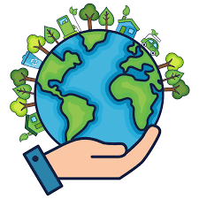

Pequeñas acciones que generan grandes cambios para nuestro planeta

El cuidado del medio ambiente consiste en proteger los recursos naturales y reducir las actividades que generan contaminación. Gracias a estas acciones es posible conservar la biodiversidad, mejorar la calidad de vida y garantizar que las futuras generaciones puedan disfrutar de un planeta saludable.
Actualmente enfrentamos problemas como el cambio climático, la contaminación del agua, el exceso de residuos y la pérdida de ecosistemas. Por ello, es importante que todas las personas adopten hábitos responsables para disminuir el impacto ambiental.
Conserva los ecosistemas y las especies animales y vegetales.
Permite utilizar de forma responsable el agua y la energía.
Reduce la contaminación y mejora la calidad del aire.
Cada persona puede contribuir al cuidado del medio ambiente mediante acciones sencillas realizadas todos los días. Separar residuos, reciclar, reutilizar materiales y reducir el consumo innecesario son prácticas que ayudan a construir un futuro más sostenible para todos.